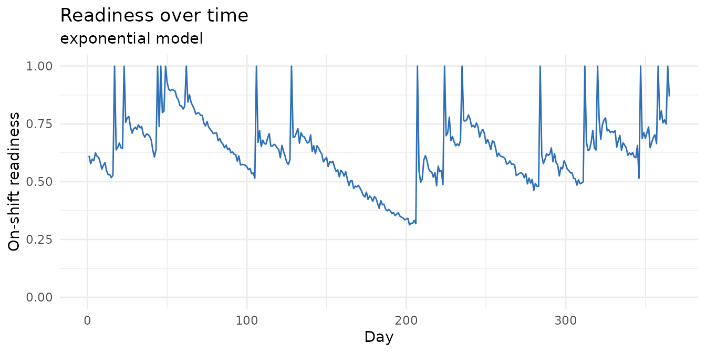
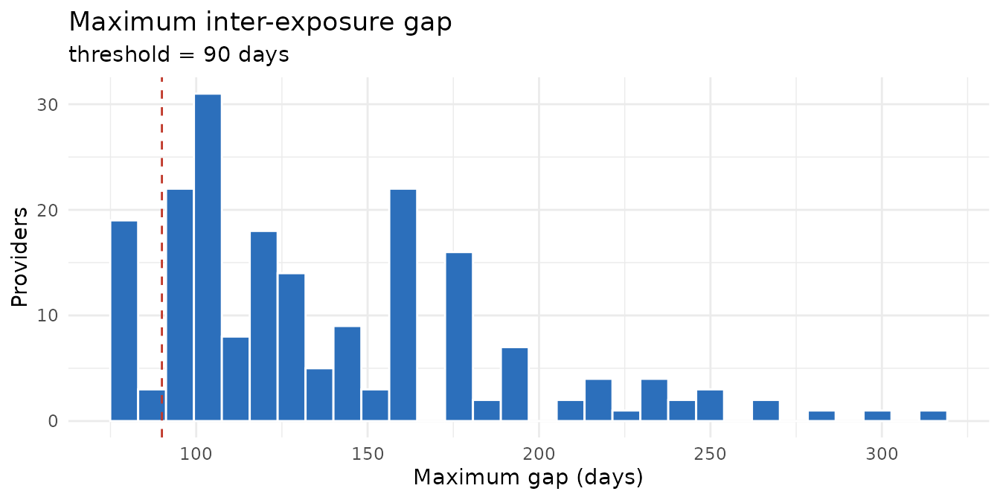
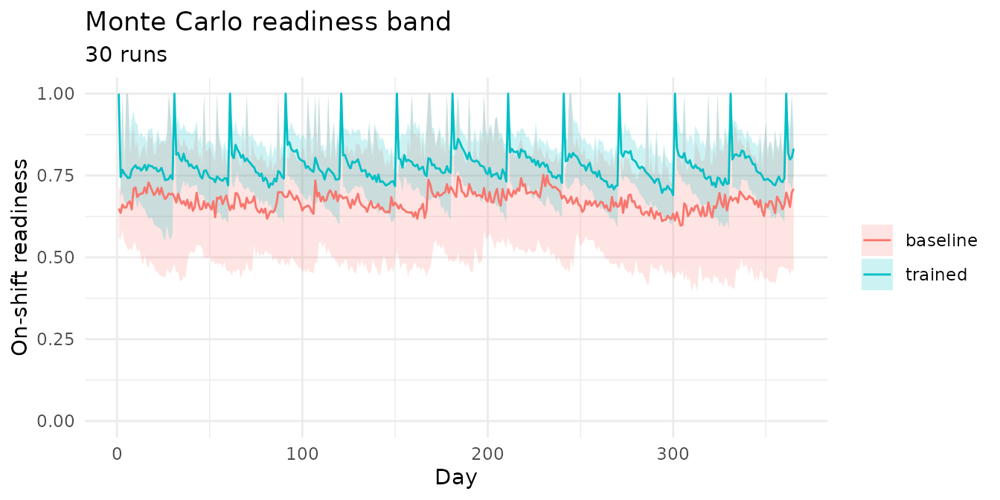

halosimr simulates exposure to high-acuity,
low-occurrence (HALO) events across a population of providers, models
how readiness decays between exposures, and estimates how training
programs change it. It extends the methodology of the Code Blue
Blindspots paper (PMID 41633464).
The idea
Some clinical events are rare enough that a given provider may see
only a few in a year, yet critical when they occur, and skill at
handling them fades with time since the last one. halosimr
asks how a provider population’s preparedness for these HALO events
rises and falls over a year, and how scheduling and training change
it.
The model runs on one chain. Events occur on random days. A provider is exposed when they are on shift the day an event happens. Each exposure resets that provider’s readiness (a 0-to-1 proxy for skill, 1 right after an exposure) to full; between exposures readiness decays. The run of days between a provider’s consecutive exposures is a gap, and a long gap means low readiness when the next event arrives. A training session acts as a scheduled reset, topping readiness back up without waiting for a real event.
So a study has three ingredients:
- a schedule of who works which shifts,
- a stream of HALO events,
- a readiness model that sets how fast skill decays between resets.
Build the inputs
Generate a schedule and a stream of events.
schedule_type = "3/7 Day" gives each provider three
day-shifts per seven-day week; rate = 0.1 means about 0.1
HALO events per day, roughly 36 across the year.
sched <- generate_schedule(
n_providers = 200, n_days = 365,
schedule_type = "3/7 Day", seed = 42
)
ev <- generate_events(n_days = 365, rate = 0.1, seed = 42)
dim(sched) # providers x days; cells "d" (Day), "n" (Night), "o" (Off)
#> [1] 200 365
head(ev) # one row per event
#> day_idx date shift_type
#> 1 10 2024-01-11 night
#> 2 16 2024-01-17 day
#> 3 22 2024-01-23 day
#> 4 22 2024-01-23 night
#> 5 31 2024-02-01 night
#> 6 41 2024-02-11 nightThe "Random" schedule type draws each day from the
empirical Day, Night, and Off weights reported in the Code Blue
Blindspots paper (Day = 0.246, Night = 0.230, Off = 0.524). Pass
weights to override, for example
weights = c(d = 1/3, n = 1/3, o = 1/3) for an equal
split.
Run one simulation
halo_sim() bundles the inputs and configuration;
hsrun() executes the pipeline and attaches the results.
Each readiness model reads its own parameters: exponential
uses readiness_half_life_days (days for readiness to
halve). readiness_threshold_days is separate from the decay
curve; it sets the gap length considered too long, used for the flag
below.
sim <- halo_sim(
sched, ev,
readiness_model = "exponential",
readiness_half_life_days = 60,
readiness_threshold_days = 90
)
sim <- hsrun(sim)
sim
#> <halo_sim> 200 providers x 365 days
#> readiness: exponential training: none
#> mean on-shift readiness: 0.637
#> providers exceeding gap threshold: 89.0%The summary gives the average readiness among on-shift providers and
the share of providers who had at least one gap longer than
readiness_threshold_days, a flag for who went dangerously
long without an exposure.
results_df summarises each provider’s gaps (the
day-counts between their consecutive exposures). Key columns are
n_events (exposures in the window), gap_max
(their longest gap), and max_gap_exceeds_threshold (whether
that longest gap ran past the threshold):
head(sim$results_df)
#> provider_id n_events t2first gap_min gap_q25 gap_median gap_mean gap_q75
#> 1 P0001 5 48 18 25.25 41.5 60.66667 54.75
#> 2 P0002 8 16 2 16.00 28.0 40.44444 53.00
#> 3 P0003 8 45 11 22.00 45.0 40.44444 49.00
#> 4 P0004 7 16 6 10.25 30.5 45.50000 78.50
#> 5 P0005 6 105 1 21.00 38.0 52.00000 82.50
#> 6 P0006 8 16 3 18.00 29.0 40.44444 57.00
#> gap_max max_gap_exceeds_threshold
#> 1 184 TRUE
#> 2 129 TRUE
#> 3 79 FALSE
#> 4 118 TRUE
#> 5 118 TRUE
#> 6 107 TRUEproportion_ready_on_shift, the daily mean readiness
across providers working that day, is the primary outcome.
Single-run figures
plot_readiness traces the on-shift readiness curve
across the year; plot_gap_distribution shows how provider
maximum gaps are distributed, with the threshold marked.
plot_readiness(sim)

Compare training programs with Monte Carlo
A single run reflects one random draw of events, so its curve is
noisy. hsrunmc() repeats the run over n
different random seeds and summarises the day-by-day spread: the median
readiness across runs, plus a shaded band for the
10th-to-90th-percentile range. Each seed needs its own fresh schedule
and events, so instead of fixed inputs you pass two functions that take
a seed and build the inputs for that run. When a training program is
set, hsrunmc() also runs an untrained baseline arm and
reports the lift in readiness: the per-day gain of the trained arm over
the baseline.
mc <- hsrunmc(
n = 30,
schedule_fn = function(s) generate_schedule(200, 365, "3/7 Day", seed = s),
events_fn = function(s) generate_events(365, rate = 0.1, seed = s),
readiness_model = "exponential", readiness_half_life_days = 60,
training_program = "monthly"
)
mc
#> <halo_mc> 30 runs x 365 days
#> training: monthly
#> baseline median readiness: 0.671
#> trained median readiness: 0.779 (mean lift +0.108)
plot_mc_band(mc)
The trained band sits above the baseline; mc$lift is the
per-day difference in median readiness.
Readiness models
Four decay kernels are available and can be called directly on a vector of days since the last reset:
days <- c(0, 30, 60, 90, 180)
rbind(
binary = readiness_binary(days, threshold = 90),
exponential = readiness_exponential(days, half_life = 60),
ebbinghaus = readiness_ebbinghaus(days, b = 0.05),
step = readiness_step(days, t1 = 90, t2 = 180, partial = 0.5)
)
#> [,1] [,2] [,3] [,4] [,5]
#> binary 1 1.0000000 1.00 1.0000000 0.000
#> exponential 1 0.7071068 0.50 0.3535534 0.125
#> ebbinghaus 1 0.4000000 0.25 0.1818182 0.100
#> step 1 1.0000000 1.00 1.0000000 0.500Select one in a simulation with readiness_model plus its
parameters, for example
halo_sim(..., readiness_model = "step", step_t2_days = 180).
Reports
For a shareable document, render the bundled template, which runs a
full single-run plus Monte Carlo analysis from parameters you supply.
Pass output_file to control where the HTML lands; without
it the output is written next to the template inside the installed
package.
rmarkdown::render(
system.file("report_template.Rmd", package = "halosimr"),
output_file = path.expand("~/Desktop/halo_report.html"),
params = list(n_providers = 200, n_days = 365, training_program = "monthly")
)